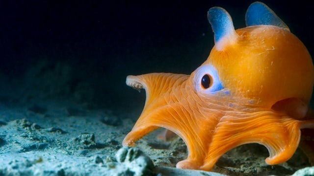
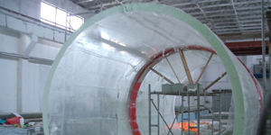

The Under Tunnel
Welcome to the first “Under Water Tunnel ” in South Asia. Immerse yourself in the breathtakingly beautiful under water life and witness the dramatic life styles of hundreds of sea creatures.
Opening of the Under Water Tunnel
South Asia’s first under water tunnel aquarium at Water World Ambathale was ceremonially opened by the Economic development Minister Hon. Ranil Wickremesinghe.Economic development Deputy Minister Hon. Susantha Punchinilame, Disaster Management Deputy Minister Hon. Dulip wijesekera, Western Provincial Council Minister Hon. Nimal Lansa, Pradeshiya sabha Chairman Ananda Ganepola and other Pradeshiya sabha members also participated in the opening ceremony.

The Size of the Sri Lankan Tunnel
Length of the tunnel: 30 feet
Total length of the tank: 47 feet
Width of the tank: 37 feet
Depth of water: 9 feet
Water capacity: 240,000 litres

How was it built?
Time taken for planning: 3 years
Time taken for construction: 13 months
The uncommon and outlandish types of feathered creatures displayed at Bird Park incorporates 7 types of macaws, 13 types of oriels, 15 types of conure and 8 types of cockatoo. Our accumulation of feathered creatures are housed in roomy walled in areas planned with the target of reproducing a situation that intently looks like the regular living space, in this way, the Bird Park is the one office in Sri Lanka where you will appreciate the extraordinary experience of watching the quality of the winged wonders of nature in their actual component and full magnificence.

The “Acrylic Panel”
The tunnel is constructed using curved thick acrylic panels. These were manufactured and moulded in Japan. There are 3 panels which measures 10 feet each. The panels are specially designed to withstand enormous pressure and can handle 3 times the load it is having now. The clarity and the strength in “Acrylic” are very much higher than “Glass”. It is said that the Acrylic is 5 - 10 times stronger than glass of the same thickness.